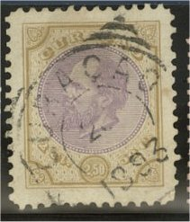
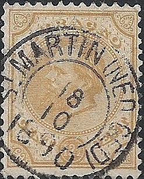
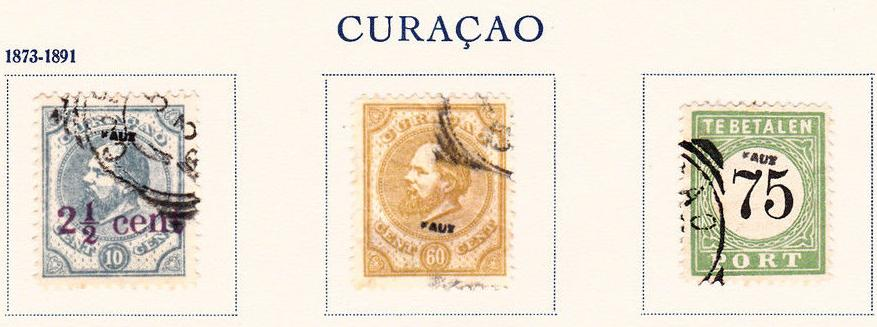
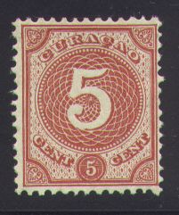
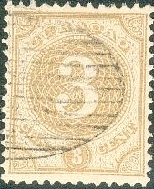

Curaçao
Return To Catalogue - Curacao, part 2 - Netherlands - Postage due stamps (Te betalen port) - LA GUARIA SAN TOMAS Pto CABELLO PAQUETTE CURACAO
Note: on my website many of the
pictures can not be seen! They are of course present in the
catalogue;
contact me if you want to purchase it.
2 1/2 c green 3 c brown 5 c red 10 c blue 12 1/2 c yellow 15 c grey 25 c brown 30 c grey 50 c lilac 60 c yellow Larger sizes, "GULDEN" values:




1 G 50 c blue and dark blue 2 G 50 c lilac and brown
The "GULDEN" values have broader margins around the design.
Value of the stamps |
|||
vc = very common c = common * = not so common ** = uncommon |
*** = very uncommon R = rare RR = very rare RRR = extremely rare |
||
| Value | Unused | Used | Remarks |
| 2 1/2 c | *** | *** | |
| 3 c | RR | RR | |
| 5 c | *** | *** | |
| 10 c | *** | *** | |
| 12 1/2 c | *** | *** | |
| 15 c | *** | *** | |
| 25 c | *** | *** | |
| 30 c | *** | R | |
| 50 c | ** | ** | |
| 60 c | *** | *** | |
| 1.50 G | RR | RR | |
| 2 G | R | R | |
Surcharged:


'2 1/2 CENT' (violet, two types) on 10 c blue (1895) '2 1/2 CENT' on 30 c grey (1895) '25 CENT' on 30 c grey (1891)
Value of the stamps |
|||
vc = very common c = common * = not so common ** = uncommon |
*** = very uncommon R = rare RR = very rare RRR = extremely rare |
||
| Value | Unused | Used | Remarks |
| 2 1/2 c on 10 c | *** | *** | |
| 2 1/2 c on 30 c | RR | ** | |
| 25 c on 30 c | *** | *** | |

Special cancel for the St.Martin island: "St MARTIN NED
GED" (NED GED = Nederlands Gedeelte = Dutch part of the
island)
Some numeral cancels similar to the ones used in The Netherlands exist (however, I have no picture available now): '201' for Curaçao, '202' for Curaçao and St. Martin (from 1881 onwards), '208' St. Eustatius and '209' Saba.
Senf made a forgery of the 2G50c value, it was distributed as an 'art gift' with the stamp journal 'Illustriertem Briefmarken Journal':
(Senf forgery of the 2G50c value, with overprint
"FALSCH." across the value)
The forger Fournier also made forgeries of these stamps. I know he used the cancel "CURACAO 5 3 1890" in a circle with additional parts of circles added to make it look like a square. He made at least forgeries of the values 60 c yellow and 2 1/2 c on 10 c blue.


Fournier forgeries as taken from a Fournier Album.

Fournier forged cancel, "CURACAO 5 3 1890" image taken
from a 'Fournier Album of Philatelic Forgeries', reduced size. In
my opinion, genuine stamps have a 'cedile' below the second
"C", thus "CURAÇAO".

Fournier forgery of the 2.50 G value?


1 c grey 2 c lilac 2 1/2 c green 3 c brown 5 c red
Value of the stamps |
|||
vc = very common c = common * = not so common ** = uncommon |
*** = very uncommon R = rare RR = very rare RRR = extremely rare |
||
| Value | Unused | Used | Remarks |
| 1 c | * | * | |
| 2 c | * | * | |
| 2 1/2 c | * | * | |
| 3 c | ** | ** | |
| 5 c | ** | ** | |



A "St EUSTATIUS" cancels and "ARUBA".


10 c blue 12 1/2 c green 15 c red 25 c brown 30 c grey
Value of the stamps |
|||
vc = very common c = common * = not so common ** = uncommon |
*** = very uncommon R = rare RR = very rare RRR = extremely rare |
||
| Value | Unused | Used | Remarks |
| 10 c | * | ** | |
| 12 1/2 c | * | ** | |
| 15 c | * | ** | |
| 25 c | *** | *** | |
| 30 c | * | ** | |

12 1/2 c on 12 1/2 c blue 25 c on 25 c red and blue 1.50 G on 2 1/2 G violet
Value of the stamps |
|||
vc = very common c = common * = not so common ** = uncommon |
*** = very uncommon R = rare RR = very rare RRR = extremely rare |
||
| Value | Unused | Used | Remarks |
| 12 1/2 c on 12 1/2 c | *** | ** | |
| 25 c on 25 c | * | * | |
| 1.50 G on 2 1/2 G | RR | RR | |
Postzegels - Stamps - Timbres-Poste - Briefmarken


{kind=link}
{kind=link}